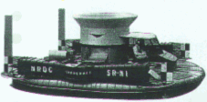
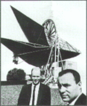
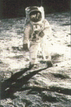

| |
|
1959
  Christopher
Cockerell ilk hoverkraftý yaptý. Bir hava yastýðý üzerinde
yol almak üzere tasarlanmýþ bu araçlann hem karada hem
de denizde gidebilme gibi bir avantajlarý vardý. Ne var
ki, kullanýmýndaki bazý güçlüklerden dolayý
hoverkraftlar kendilerinden bekleneni veremediler. Christopher
Cockerell ilk hoverkraftý yaptý. Bir hava yastýðý üzerinde
yol almak üzere tasarlanmýþ bu araçlann hem karada hem
de denizde gidebilme gibi bir avantajlarý vardý. Ne var
ki, kullanýmýndaki bazý güçlüklerden dolayý
hoverkraftlar kendilerinden bekleneni veremediler.
|
| 1961
Ýnsanlý
ilk uzay uçuþu 12 Nisan'da SSCB tarafýndan gerçekleþtirildi.
Kozmonot Yuri Gagarin, Vostok-1 adlý uzay aracýyla Dünya'nýn
çevresini 108 dakikada dolaþtý.
|
| 1964
Uluslararasý
uydularla telekomünikasyon örgütü Intelsat kuruldu. Bu
tarihten sonra ilk uydusunu fýrlatan Intelsat böylece
240 komünikasyon devresi ve 1 televizyon kanalýnýn
gereksinimini karþýlayabiliyordu.
|
| 1967
Ýlk kalp
nakli gerçekleþtirildi. Güney Atrikalý cerrah
Christiaan Barnard, tedavi olanaðý kalmamýþ aðýr bir
hastanýn kalbini bir trafik kazasýnda aðýr yaralanarak
hastahaneye getirilen ve ölmek üzere olan birinin
kalbiyle deðiþtirdi. |
| 1969 ABD
Savunma Bakanlýgý ARPANET (Advanced Research Projects
Agency) projesini baþlattý. 1965 yýlýnda MIT Lincoln
Laboratuvarlarýnda ilk kez iki bilgisayar birbirine baðlanmýþ
ve karþýlýklý veri alýþ veriþinde bulunmuþlardý.
ARPANET projesi kapsamýndaysa dört üniversitenin
bilgisayarlarý, araþtýrma, eðitim ve hükümet
uygulamalarýný yürütmek için birbirine baðlandý. Hükümet
bu projeye baþlarken olasý bir düþman saldýrýsý ardýndan
iletiþimin kesilmesi durumunda klasik iletiþim yollarýna
alternatif olacaðý düþüncesini taþýyordu. Bu proje
günümüzde kullanýlan internetin baþlangýcý niteliðindeydi. |
|
| 1960
T.
H. Maiman, yakuttan bir çubuk kullanarak ilk lazer aygýtýný
yaptý. Bu konuda daha önceden de çalýþmalar olmasýna
karþýn bugün anladýðýmýz anlamýyla yaplan ilk
lazer Maiman'a aittir: |
| 1961
ABD'li
fizikçi Murray Gell-Man ve israilli fizikçi Yuval
Ne'eman, parçacýklarýn sýnýflandýrýlmasýna iliþkin
ve sekizli sýnýflama ya da SU(3) denen bir sýnýflama
þemasý önerdiler. Bu þema, kuvvetli etkileþime
giren parçacýklarýn daha temel parçacýklardan oluþtuðunu
öngörüyordu. 1964 yýlýnda Gell-Mann, bu þemanin
fiziksel temeli olarak kuark kavramýný ortaya attý.
Fizikçi parçacýklara-bu adý verirken james-Joyce'un
Finnegans Wake romanýnda geçen uydurma bir isimden
esinlenmiþti. |
| 1965
 Arno
Penzias ve Robert Wilson, evrende 3 kelvinlik artýk bir
ýsýl enerjiye karþýlýk gelen bir fon ýþýmasý
(Cosmic Backround Radiation) keþfettiler. Günümüzde
bunun evrenin milyarlarca yýl önceki oluþumu sýrasýnda
gerçekleþen baþlangýç patlamasýndan günümüze
ulaþan bir artýk fon ýþýnýmý olduðu görüþünde
birleþilmektedir.
|
| 1967
Ýngiliz
gökbilimciler Antony Hewish ve Jocelyn Bell ilk pulsarý
keþfettiler. Hewish ve Bell, bu buluþlarýnýn radyo
dalgalarýndaki hýzlý ve ani oynamalarý kaydetmek
amacýyla özel olarak tasarlanmýþ bir radyoteleskop
yardýmýyla gerçekleþtirdiler. |
| 1969
 21
Temmuz'da ABD'li astronotlar Neil Armstrong ve Edwin
Aldrin Ay'a ayak basan ilk insanlar oldular.
|
|
|